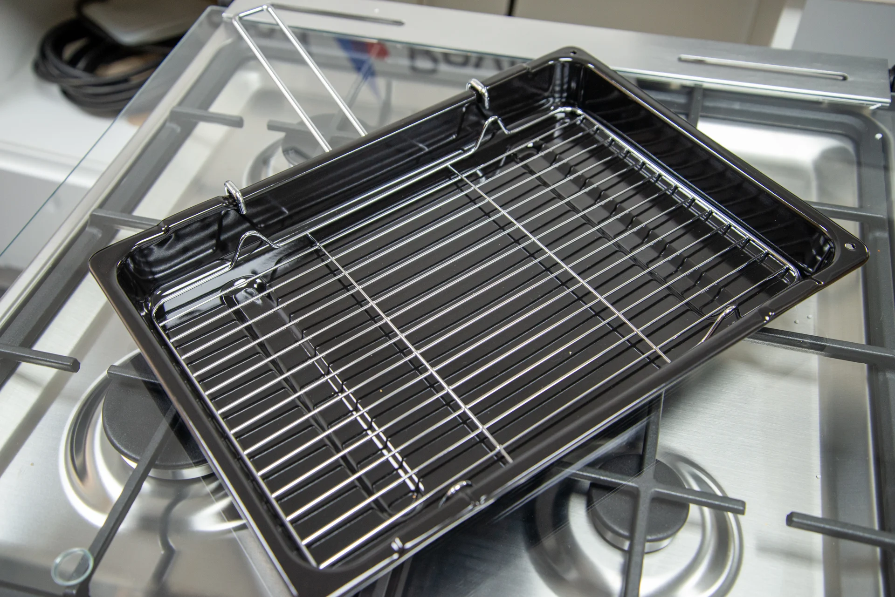

Cooking Recipes to Build Your Soft Skills
Equipment Needed

Cutting Board
It is important to use a non plastic cutting board due to heavy microplastic wear and tear.
Grill Pan
A cast iron grill pan will help heat retention as well as elevate the texture and appeal of what you're cooking.

Colander
A colander is simply a strainer that can come in many materials. Its recommended to use stainless steel if you intend to strain heated food.

Peeler
Having different variations of a peeler is not necessary but will make it easier when peeling different textures.

Knives
It is important to have a large knife set with lots of variation as each knife has a different purpose.

Mixer
Having a large bowl mixer is crucial for some recipes however you may opt for a handheld as well.

Grater
A grater will allow rougher ingredients to be shredded down to be serve as a garnish or sauce.

Measuring Cups
Having multiple sizes of measuring cups for liquid and volume is important for following recipes.
Oven Pan
When purchasing a pan, ensure that it's oven safe and do not overheat your pans maximum temperature specifications.

Mixing Bowls
Mixing bowls are non essential but make it easier to mix dry and wet ingredients evenly.

Blender
A food processor like a blender is important for pulverizing dry and wet ingredients into a liquid.

Tongs
Can be useful for handling hot foods during or after the creation process.